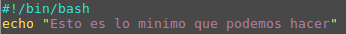
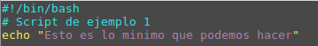

Script en Bash Shell
Un script es un archivo de texto que contiene una serie de comandos interpretables por el sistema en el que se
va a ejecutar. Es importante que este archivo sea un archivo de texto sin formato, pues lo que se ejecutan son
ordenes como si se usara la linea de comandos manualmente, de tal forma que cualquier carácter no imprimible
distinto del espacio o retorno de carro hará el archivo no interpretable.
Estos archivos contienen un comando (o agrupación de comandos por tuberias) por línea.
El archivo se va ejecutando linea a linea.
Estructura minima
Nombre
Un archivo de script en shell puede tener cualquier nombre, pero cuidado, no le pongas nombres de comandos del
sistema. La extensión del archivo podría ser cualquiera, se le pone .sh para distinguirlo de otros tipos de
archivos.
Estructura mínima
Todos los archivos en shell bash deben comenzar indicando donde se ubica el interprete de comandos, es decir, el
programa que sabe que significado tiene cada comando. A continuación se ubica la lista de comandos a ejecutar.
El mínimo script que podríamos escribir es el siguiente:

Permisos
Al archivo hay que darle permisos de ejecución, que por defecto no se asignan al crear el archivo. [ Estos
permisos pueden asignarse con el comando chmod]
Comentarios
Todo lenguaje de programación permite escribir comentarios que son líneas de texto para aclarar el código
fuente. Los comentarios en Bash se indican con el símbolo #. Por ejemplo, para el script anterior podríamos
escribir el siguiente comentario:

Invocación
Cuando se ejecuta un comando se dice que se está invocando el comando. Los comandos del sistema son archivos
ejecutables ubicados en sitios específicos del sistema y se pueden invocar desde cualquier posición del árbol de
directorios, mediante la línea de comando. En cambio, un archivo de script propio, que esta en una ubicación
desconocida para el sistema se debe invocar indicando la ruta para llegar a él desde la ubicación en la que
estamos. Lo usual es posicionarnos dentro del directorio que contiene el script y teclear:
./nombreScript.sh
El punto barra indica que busque el archivo ejecutable dentro del mismo directorio en el que nos encontramos.
Variables
Una variable es una posición de memoria donde podemos almacenar información. En bash podemos declarar Variables
y asignarles un valor simplemente escribiendo un nombre seguido de un igual y un valor. Para obtener el valor de la
variable tenemos que anteponer a la variable el simbolo $. Por ejemplo:
#!/bin/bash
var=Diego
echo $Diego
Obtener datos por teclado
Si queremos que el usuario pueda introducir datos por teclado, como por ejemplo el valor de una variable, utilizamos
la instrucción read, la cual se queda a la espera de que el usuario presione la tecla de intro ( o retorno de carro).
Por ejemplo:
#!/bin/bash
echo dime un numero
read numero
echo Has dicho: $numero